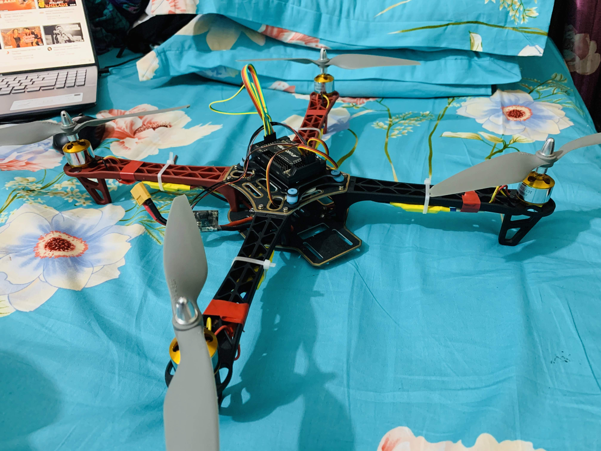
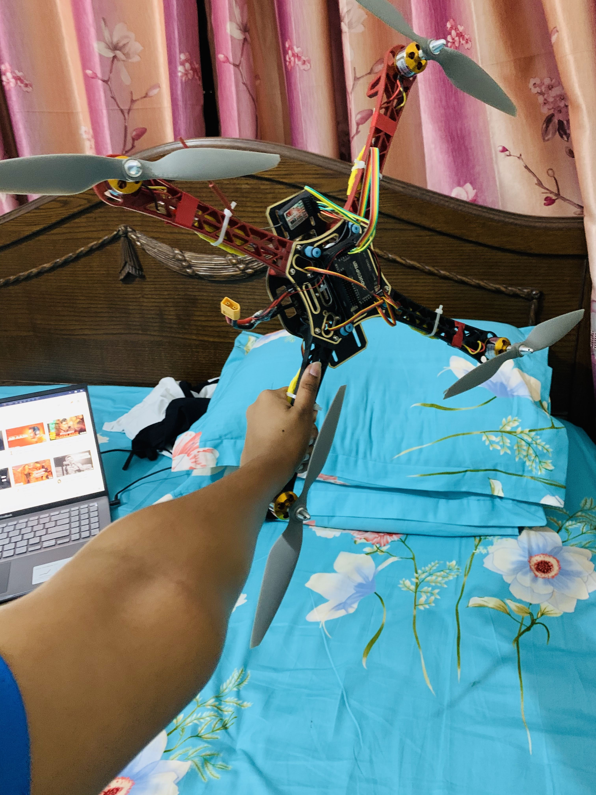

Drone Development Project
The pandemic gave me the perfect opportunity to take on this project in my free time. It was a completely hands-on learning experience where I wasn’t applying any formal academic knowledge, but instead, I learned by trial and error, relying on online resources like Google and YouTube for guidance and troubleshooting.
Personal Drone Project
Project Type: Personal Project
Time Period: During the COVID-19 pandemic
Project Overview
In the first year of my engineering program, I decided to explore my fascination with drones by building one from scratch. The pandemic provided an ideal opportunity to pursue this hands-on project in my free time. Without formal coursework or prior experience, I relied on online resources like Google and YouTube, learning through trial and error.
The goal was straightforward: create a functional drone. What began as a curious experiment turned into a rewarding journey of discovery, teaching me about drone mechanics, electronics, and programming. This project was a perfect outlet for creativity and problem-solving.

Caption: Drone
Key Features
Design and Structure
- Lightweight Frame: Built using carbon fiber for durability and reduced weight, ensuring stable flight performance.
- Modular Design: Made assembly, maintenance, and future upgrades easy and efficient.
Power and Propulsion
- Brushless DC Motors: Selected for their high efficiency and ability to maintain stability during flight.
- LiPo Battery: Used for longer flight durations and consistent power output.

Caption: Drone
Control System
- Flight Controller: Integrated with a gyroscope to ensure stability during hover and movement.
- Remote Control: Operated via a 2.4 GHz controller, allowing real-time flight adjustments.
Sensors
- Altitude Sensor: Helped maintain consistent hover and flight altitude.
- Obstacle Detection Sensors: Enabled the drone to autonomously avoid obstacles, ensuring safer flights.
Working Mechanism
Data Acquisition
- Sensors continuously measured altitude and detected nearby obstacles, aiding in flight path adjustments and crash prevention.
Stabilized Flight
- The flight controller utilized gyroscope data to maintain balance during hover and motion.
Obstacle Avoidance
- Obstacle detection sensors redirected the drone when objects were detected, enhancing flight safety.
Remote Control
- The 2.4 GHz remote allowed real-time control of the drone’s direction, altitude, and speed.
Challenges and Solutions
The project presented several challenges:
- Wiring and Electronics: Troubleshooting connections took multiple attempts, often guided by online forums and YouTube tutorials.
- Sensor Calibration: Ensuring accurate data from the altitude and obstacle detection sensors required extensive trial and error.
- Flight Stability: Stabilizing the drone during flight demanded careful tuning of the flight controller and motor settings.
Through persistence and resourcefulness, I overcame these hurdles, learning valuable lessons about patience and adaptability.
Achievements
- Successfully built and tested a functional drone capable of stable flight and obstacle avoidance.
- Acquired hands-on experience with drone mechanics, programming, and system integration.
- Gained troubleshooting skills using online tools and self-directed learning.
Applications
Although primarily a personal project, the drone could be adapted for practical uses such as:
- Aerial Photography and Filming
- Surveying and Mapping
- Recreational Activities
Reflections
This drone project marked a significant milestone in my engineering journey. It showcased the potential of self-directed learning and underscored the value of creativity and persistence. Working without formal academic guidance, I developed a deep interest in UAV technology and gained the confidence to take on complex, independent projects. I’m excited to apply these skills in future endeavors and continue exploring the possibilities of drone innovation.